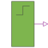

StepDigital Step Source |

|
Information
This information is part of the Modelica Standard Library maintained by the Modelica Association.
The step source output signal steps from the value before to the value after at the time stepTime.
To specify the logic value parameters, the integer code has to be used.
Code Table
| Logic value | Integer code | Meaning |
| 'U' | 1 | Uninitialized |
| 'X' | 2 | Forcing Unknown |
| '0' | 3 | Forcing 0 |
| '1' | 4 | Forcing 1 |
| 'Z' | 5 | High Impedance |
| 'W' | 6 | Weak Unknown |
| 'L' | 7 | Weak 0 |
| 'H' | 8 | Weak 1 |
| '-' | 9 | Do not care |
If the logic values are imported by
import L = Digital.Interfaces.Logic;
they can be used to specify the parameter, e.g., L.'0' for forcing 0.
Parameters (3)
Connectors (1)
| y |
Type: DigitalOutput |
|---|